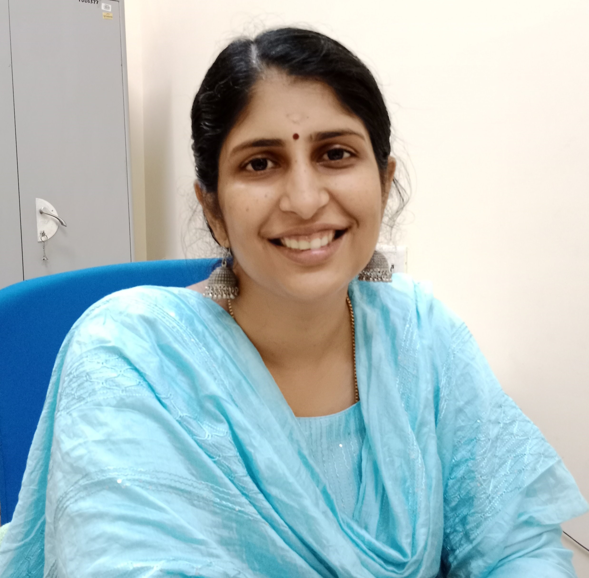
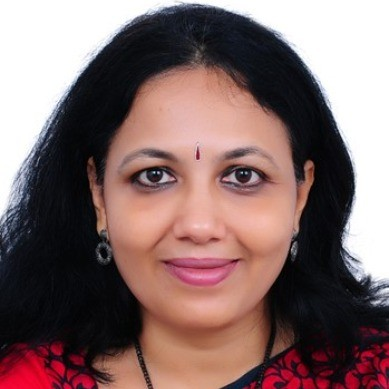

SUMMER SCHOOL 2027
Speakers

Dr. Arun Rajkumar
Assistant Professor
Indian Institute of Technology, Madras
His research interests include machine learning, rank aggregation and statistical learning, with an emphasis on developing data-driven computational methods.

Dr. P. Balasubramaniam
Senior Professor
The Gandhigram Rural Institute, Gandhigram
Dean, School of Sciences, and Director of the Centre for Mathematical Modelling and Quantum Computing at The Gandhigram Rural Institute, with research expertise in Fuzzy Logic, Image Processing, Machine Learning, Control Systems, and Quantum Computing.

Dr. Manas Kamal Bhuyan
Professor (HAG)
Indian Institute of Technology, Guwahati
At the Indian Institute of Technology Guwahati, with expertise in Artificial Intelligence, Machine Learning, Computer Vision, and Image Processing. His research also focuses on Biomedical Signal Processing and intelligent assistive technologies.

Dr. Pushparaj Mani Pathak
Professor
Indian Institute of Technology, Roorkee
At the Indian Institute of Technology Roorkee, with research expertise in Robotics, Dynamics, Control Systems, Artificial Intelligence, and Bond Graph Modelling.

Dr. Rama Krishna Sai Gorthi
Professor
Indian Institute of Technology, Tirupati
At the Indian Institute of Technology Tirupati, with research expertise in Signal and Image Processing, Computer Vision, Pattern Recognition, Machine Learning, Deep Learning, and Visual Tracking.

Dr. Ramiya A M
Associate Professor
Indian Institute of Space Science and Technology, Thiruvananthapuram
At the Indian Institute of Space Science and Technology, with research expertise in Remote Sensing, Geospatial Technology, LiDAR, Image Processing, and Geographic Information Systems (GIS). She is a recipient of the Kerala Young Scientist Award (2021).

Dr. P. Sumathi
Professor
Indian Institute of Technology, Madras
At the Indian Institute of Technology Roorkee, with research expertise in Signal and Image Processing, Artificial Intelligence, Machine Learning, Computer Vision, Instrumentation, and FPGA-based Signal Processing.

Dr. Sumitra S
Professor
Indian Institute of Space Science and Technology, Thiruvananthapuram
At the Indian Institute of Space Science and Technology, with research expertise in Machine Learning, Graph Representation Learning, Geometric Deep Learning, Kernel Methods, and Pattern Recognition.

Dr. Varun P. Gopi
Associate Professor
National Institute of Technology, Trichy
At the National Institute of Technology Tiruchirappalli, with research expertise in Signal Processing, Medical Image Processing, Biomedical Signal Processing, Artificial Intelligence, and FPGA Architectures.